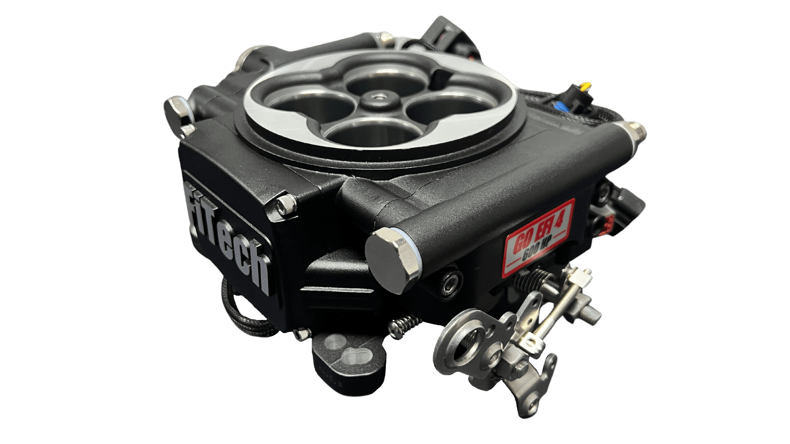
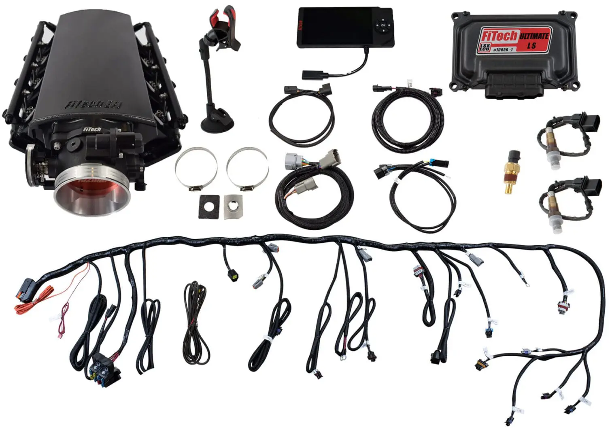

FiTech ProCal Laptop Software
ProCal is FiTech's PC-based tuning software that connects to your ECU through the handheld. It allows deeper calibration access than the handheld alone. A Windows laptop is required — Mac is not supported.
Step 1 — Select Your System
Choose the product family to get the correct ProCal software version.

Throttle Body
All Go EFI systems

LS & Go Shift
All LS systems + Go Shift TCU

6-Pack / Tri-Power
39610 Tri-Power system
ProCal — Throttle Body Systems
Compatible with all Go EFI throttle body systems. Works on Windows 10 and Windows 11 (see installation notes below).
ProCal — LS & Go Shift Systems
Compatible with all LS-based systems and the Go Shift transmission controller. Works on Windows 10 and Windows 11 (see installation notes below).
ProCal — 6-Pack / Tri-Power
Dedicated ProCal software for the 6-Pack and Tri-Power (39610) system. Works on Windows 10 and Windows 11 (see installation notes below).